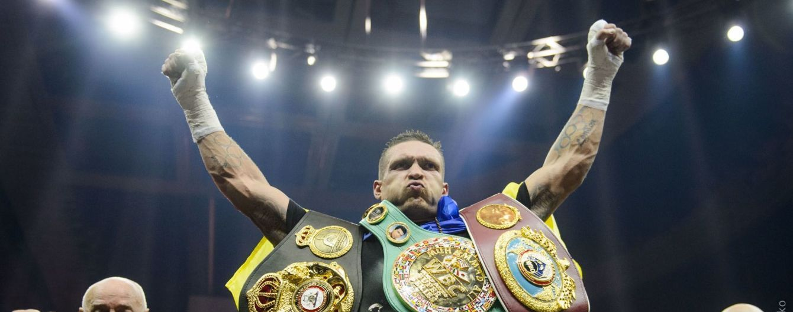

Біографія спортсмена
Олександр Усик
Народився в Сімферополі, Кримська область, Українська РСР, СРСР. (нині Автономна Республіка Крим, Україна).
Батьки родом з півночі України: мати народилася в Чернігівській області (село Риботин Коропського району), а батько родом із Сумщини. З дитинства Олександр відвідував школу сімферопольського футбольного клубу «Таврія», але футбольна кар'єра Олександра не склалася. У 15 років почав займатися боксом.
Закінчив школу № 34 в Сімферополі (тут навчався разом зі своєю майбутньою дружиною Катериною) та Львівський державний університет фізичної культури (потім — аспірант цього вишу).
У 2006 році взяв участь у чемпіонаті Європи з боксу, дійшов до півфіналу, у якому програв росіянину Матвію Коробову у ваговій категорії до 75 кг.
Потім Усик перейшов у напівважку вагову категорію і в 2008 році завоював в Болгарії Кубок Стренджа.
У лютому 2008 року був відправлений олімпійським комітетом у Розето-дельї-Абруцці, замінивши Дениса Пояцику. Там він переміг боксерів світового класу, азербайджанця Елчана Алізалде й британця Денні Прайса.
Узяв участь в Олімпійських іграх 2008 року в Пекіні. У першому турі Олександр з легкістю переміг боксера з Китаю Юшана Нійаті (23:4), а в другому турі програв майбутньому срібному призеру, італійцеві Клементе Руссо (4:7). Після поразки на Олімпіаді Олександр спустився в напівважку вагу й виграв у 2008 році чемпіонат Європи, потім знову перейшов у важку вагову категорію. Узяв срібну медаль на чемпіонаті Кубка Світу 2008 року. У 2009 році взяв участь у чемпіонаті світу з боксу. Завоював на ньому бронзову медаль, поступившись у півфіналі росіянину Єгору Мехонцеву.
У 2011 році на чемпіонаті світу переміг росіянина Артура Бетербієва й у фіналі боксера з Азербайджану Теймура Маммедова, завоювавши золоту медаль.
 |
|
 |
|
1:0 |
|
| Олександр Усик |
|
Гасієв Мурат |